福岡県にある鬼塚観音。
某珍寺系写真集をお手伝いした際に、唯一ココだけ知らなくて某写真家先生に軽くドヤ顔されたのがメチャクチャ悔しくて
速攻で行ったりましたわ。
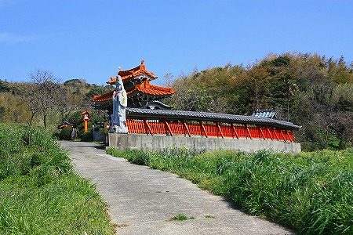
行った先はハッキリ言ってかなり辺鄙なとこ。
ただし、後から諸々資料を当たってみると
子宝祈願のスポットとしては結構有名みたい。
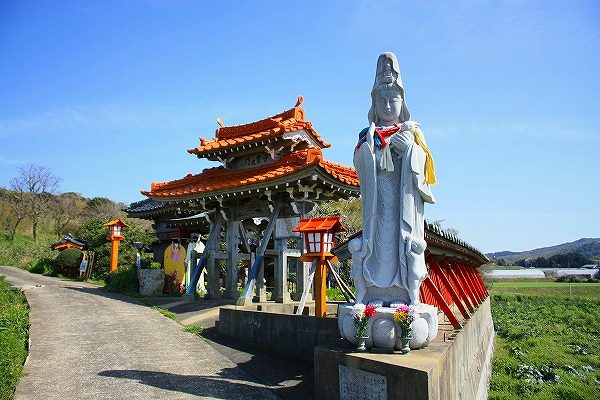
赤い塀に囲まれた境内はさして広くもなく、ここがあんなところだ、と事前に知らなければ不肖私めもスルーしていただろう。
というほど地味〜な外観なのだ。
那覇の守礼門そっくりな山門がひときわ目を惹く。
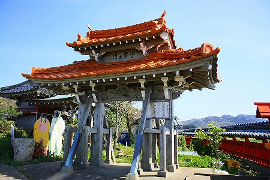
守礼門ならぬ
守霊之門だった。
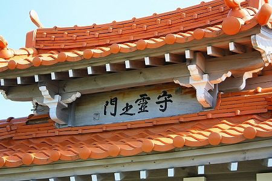
この地から建築隊（つまり大工さん）として沖縄に赴き、亡くなった3名の鎮魂を祈念して昭和61年に建てられた門だとか。
そして何故か古代の人達の顔出し看板。
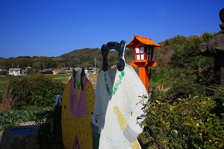
今から1800年ほど前に
神功皇后がこの地に来たという言い伝えに因んでいるものと思われる。
先の大戦の慰霊と新羅征伐伝承という重いテーマが前説となってしまったが、ココから先、境内の様子は一転する。
申し訳ないほど一転する。
守霊之門を潜ると見えてくるのがこの観音堂。
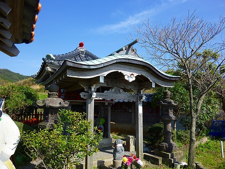
観音堂の前には奇妙な石が置いてある。
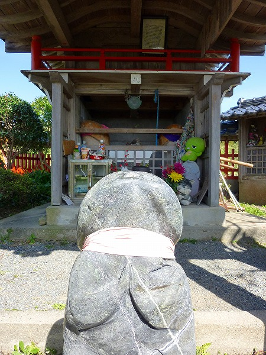
言わずともお判りですよね。
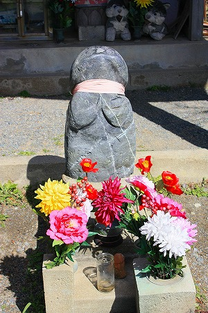
合掌チンコ君です。
この鬼塚観音、いわゆる
男根信仰の観音サマなのだ。
しかも近くで見てみると先端部だけツヤツヤに磨いてあります。
まさか参拝者が手で撫でただけではここまでツヤは出ないだろうから最初から研磨したのだろう。
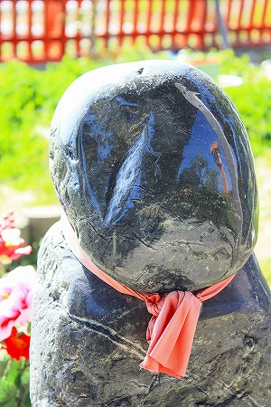
合掌チンコ君の後ろの観音堂。
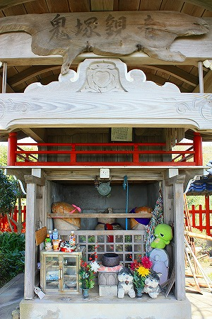
子宝を願う人が奉納したのだろう、お菓子やぬいぐるみなどが奉納されている。
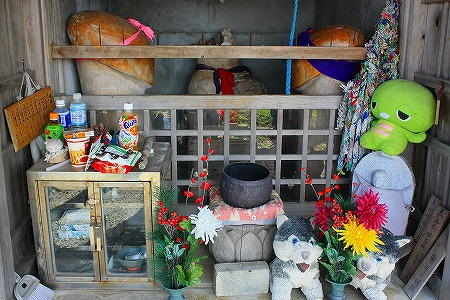
両脇の巨大キノコみたいなのはモチロン木で作った巨大チンコ。まるで仁王像のごとく左右一対で仁王立ち。
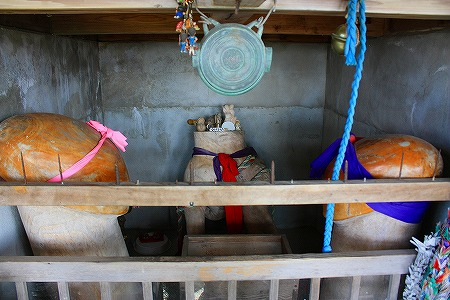
こちらがご本尊の観音サマ…なのだろうか？
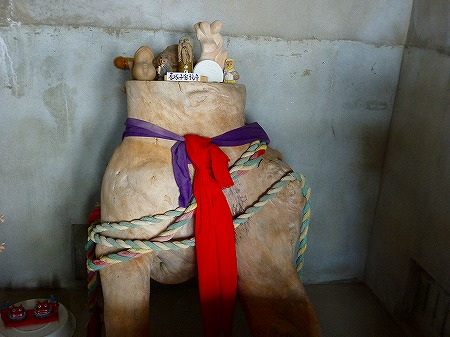
女性の下半身をイメージした木の股である。肝心な部分には赤い布が掛けられている。
と、まあここまではよくある（いや、ないけど！）チン寺だが、ここからがチョット大変。
観音堂の脇に横長の祠がある。
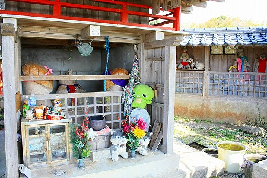
中には同じ作者によるものなのだろう、
3体の女性の裸像が奉納されていた。
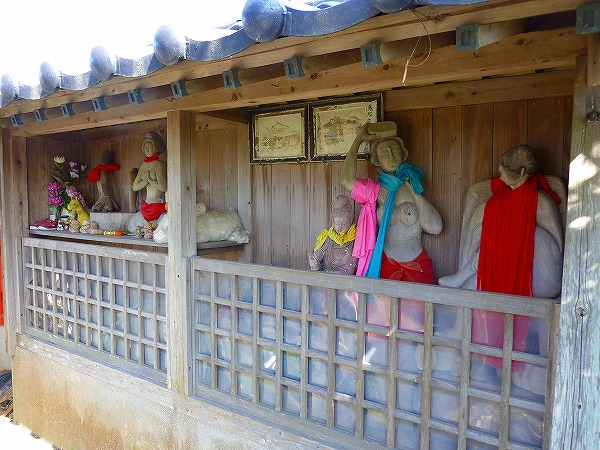
左の像は合掌した裸婦像。日本髪を結っている像の下半身には赤い布が巻かれていた。
あ、マウスのポインタを画像にあわせると布の下がチョット見えます（対象年齢；18歳以上）。
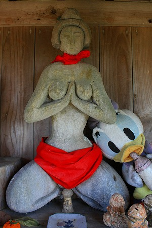
隣には立派なチン木が。
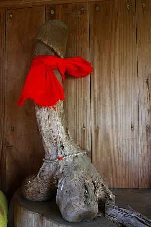
その足元にはチン焼物。
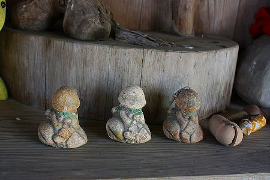
右の2体はやや大きい。ほぼ等身大といったところか。
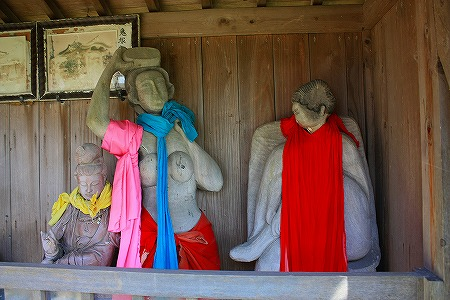
立像の裸婦は
海女さんなのか？
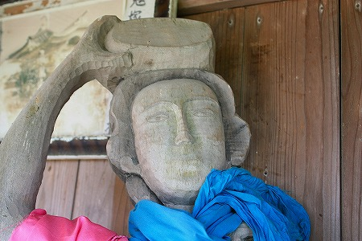
水色の布をチョイと除けさせてもらいますよ。
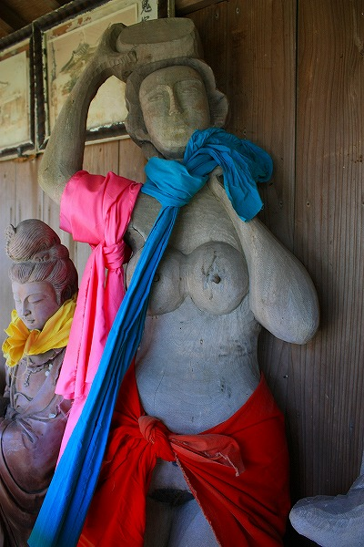
うっ。
リアル下の毛が植毛されているではないか！
何なんだこの本気度！
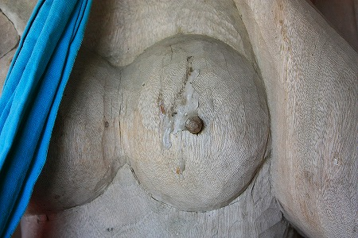
（↑ハイ、ここもロールオーバー！対象年齢；18歳以上）
胸には蝋燭がたらされていて、もう何かー。
こーゆーのって細かく説明すればするほど野暮なんで程々にしときます。
こちらの坐像裸婦も強烈。
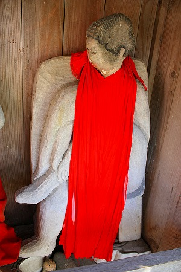
（↑ここもロールオーバー！）
媚びた流し目がマニア向け。
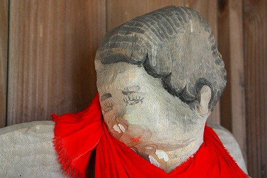
下から煽って撮影してみたものの、品がないのでモザイクかけてみました。詳しくは現地にて確認されたし。
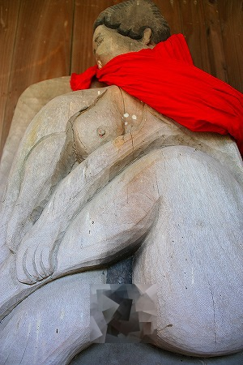
裸婦像の布をまくり、局所に大接近して撮影していると背後から楽しそうな声…
はっ！うら若き女性グループがやってきた！
しまった！これじゃあ俺、ただのド変態野郎じゃあないか！
軽く会釈を交わしなるべく極めて冷静な態度を装い、「私、学術的研究でここを訪れてます、キリッ！」的な態度で女性達と入れ替わるように境内の外へ出た。
若い女性達は子宝、というより縁結びの祈願で訪れたのだろうな。
私が想像している以上に人気の縁結びスポットなのだろうか…。
帰り際、屋根を見上げると…
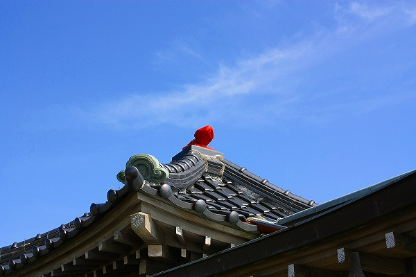
おお！あんなところにもチンチンが！
よくやるのー。